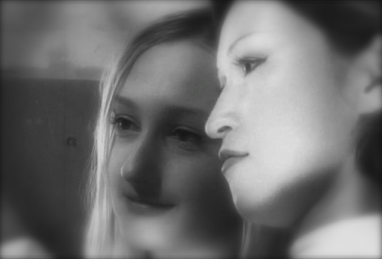

一个人在家看完《刀的哲学》，一部俄罗斯恐怖片。百科上写是由俄罗斯著名超现实主义导演AndreyIskanov拍摄，讲述日本侵华战争时期，日本731部队在中国犯下的滔天罪行。 好吧，我完全没看出是讲日本731的，到最后我也一直以为是纳粹集中营的事。因为里面被残害的都是外国人，并没有中国人，而且我是跳着看的。但即使是跳着看，还是能被黑白画面传递出恐怖影像所感染，压抑的情绪像毛毛虫一样爬遍全身。一开始我还以为是一部疯狂的纪录片，直到看到超现实主义这几个字才感觉谢天谢地，心里稍稍有所安慰。 解剖孕妇，射线照射，拔牙试验，毒气试验，制作骨骼标本，头部细菌侵蚀试验，体内埋置生物实验，这还只是上集的内容。每一个试验都细致入微，配上粗颗粒黑白画质和演员或神经质或木讷的面部表情，很容易以假乱真。加上黑白片中黑色压抑到极致，白色形成虚无苍白无力的光晃荡其间，看久了绝对会有催眠暗示的效果。 所以我只能跳着看，即使如此，每一次跳动后不断出现的画帧也足够阴郁和邪恶。隔着一道迷墙，看不清却也够真切。人就是这样，又害怕又要看，快速过完，赶紧删掉，像是留下它就是留下通往罪恶的后门一样，要“刷”的一声清除干净。 除了猎奇，还有什么理由去看这样的片？实在想不出，大概像我这样觉得自己看过很多恐怖片都不会感觉害怕的，总想着挑战下极限。只是挑战来又如何，刺激下神经，大呼过瘾，又如何？害怕和恐惧还不是一回事，害怕是当下，恐惧则更深藏在潜意识中，大概不知不觉你的梦境里也会开始潜入一些邪恶的东西。而且我发现越长大，越胆小，很多以前不怕的，只是以为电影都是假的，心里谨记这句话，貌似也有所帮助，但大了来发现电影还真不是那么假，很多事都可能发生都在发生，生活中发生的事已经足够让你有或明或暗的恐惧，还需要电影来加剧吗？ 呼，还是少看的好。或者看点商业恐怖片就够了，像这种实验级别的还是算了。